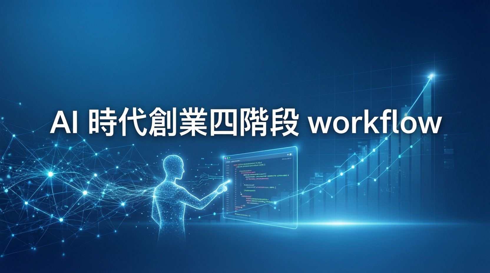

十人獨角獸時代來臨：從 Idea 到 Scale，AI 如何重寫創業流程

Anthropic 發布 AI 新創 Playbook，提出「十人獨角獸」（ten-person unicorn）概念，揭示 AI 時代創業的新形態。一個創業者配合 AI 工具，即可完成以前需要整個團隊才能做到的工作。
關鍵洞察：AI 不是讓創業變簡單，而是讓執行和試錯的成本都變得更低。好的想法可以更快被驗證，但錯的想法也可以很快被包裝得有模有樣。
最重要不是做產品，是做驗證。三個關鍵 use case：
AI coding 最大問題不是寫不出來，而是它太願意寫。三個 MVP use case：
公司從 founder 手工操作變成一套可重複運轉的系統。兩個關鍵 use case：
三個關鍵護城河：
未來新創公司的差距，不是誰有沒有用 AI（這件事很快就不會是差異），而是誰把 AI 系統化得更好。AI 會放大創業者的判斷力，也會放大創業者的愚蠢。
一個懂得驗證、設定邊界、建立 workflow 的 founder，會用 AI 加速學習和執行；一個沒有判斷力的 founder，只會用 AI 更快做出錯的東西。
用 Claude 做市場研究、競品分析、反向挑戰假設，避免做出一個沒人要的東西
用 Claude Code 快速做產品，但用 scope、context、security 把它管住
把重複出現的工作流變成一套固定會運轉的系統，AI變成營運系統的一部分
把資料、workflow 沉澱成產品護城河，建立真正不可替代的競爭優勢